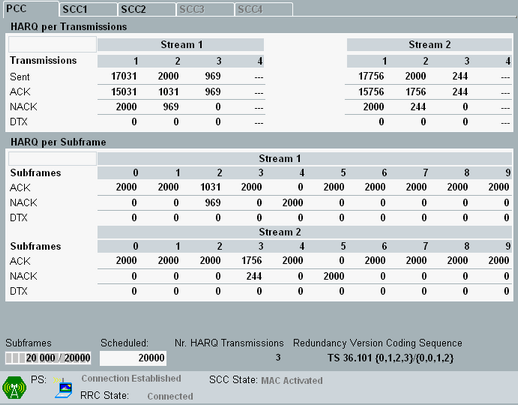

The "HARQ" view provides an overview of all downlink subframe transmissions performed since the measurement was started.
If you cannot access the view, check whether HARQ is enabled, see "Miscellaneous Connection Settings Part 2".
For carrier aggregation scenarios, the results for the individual component carriers are presented on different tabs.

- The "HARQ per Transmissions" table lists the initial transmissions and all retransmissions. Column 1 indicates the initial transmissions (first redundancy version), column 2 the first retransmission (second redundancy version), column 3 the second retransmission (third redundancy version), and so on.
For each transmission type, the number of sent subframes, received ACK, received NACK and DTX is displayed. - The "HARQ per Subframe" table lists the ACK, NACK and DTX received in the individual subframes of the radio frame. So column 0 indicates the ACK/NACK/DTX received in the first subframe of a radio frame, column 9 the ACK/NACK/DTX received in the last subframe of a radio frame.
You can display all results in the tables as absolute numbers or as percentages. To toggle the presentation, use the softkey > hotkey combination "Display" > "Absolute / Relative".
A relative "Sent" value indicates the percentage of the absolute "Sent" value relative to the total number of sent subframes (sum of the table row). A relative ACK, NACK or DTX value indicates the percentage of the absolute value, relative to the sum of the absolute ACK, NACK and DTX values in the table column.
At the bottom of the view, some HARQ settings are displayed for information, in addition to the view-independent GUI elements. For a description, see "DL HARQ".